| Card | Improvement |
|---|---|
| Benefits Worth Taking Seriously | Benefit-tier coded visual, evidence-tier sort, new Benefits glossary term, safer checkpoint wording with human review. |
| Human-Centered AI | Accountability-flow visual and student-support-note scenario choice that keeps review and responsibility with people. |
| Better AI Is a Choice | Better-AI control panel and lever selection for an internal policy assistant scenario. |
| Effective Prompting from Model Literacy | Expanded context tray plus prompt-builder with audience/context, constraints, examples, evidence, uncertainty, format, and review. |
| Model Literate Synthesis | Full-chain map and tap-order capstone from prompt context through tokens, IDs, embeddings, hidden states, logits, probabilities, sampling, RAG/grounding, review, and accountability. |
src/data/content.tssrc/main.tsxsrc/components/VisualAids.tsxsrc/styles/global.cssdocs/REVIEW_NOTES.mddocs/stage-audits/v0-25-new-dawn/source-review.mddocs/stage-audits/v0-25-new-dawn/IMAGE_ASSET_PLAN.mddocs/stage-audits/v0-25-new-dawn/TINY_INTERACTION_PLAN.mddocs/stage-audits/v0-25-new-dawn/IMPLEMENTATION_REPORT_V0_25_2.mddocs/stage-audits/v0-25-new-dawn/implementation-screenshots/*docs/stage-audits/v0-25-new-dawn/prompt-life-v0-25-2-new-dawn-implementation-report.htmldocs/stage-audits/v0-25-new-dawn/prompt-life-v0-25-2-new-dawn-implementation-report.pdfbenefit-tier-sort: sort claims by confidence.human-centered-scenario: choose the accountable deployment.better-ai-levers: select better design/governance levers.prompt-builder: build a better current-context prompt.synthesis-chain: put the prompt-to-accountability story in order.Added Benefits. Updated New Dawn learning-path grouping and key-term display priority so Benefits, Uncertainty, Source review, Human review, Model literacy, and final-chain terms appear sensibly without mobile chip overflow.
No precise statistics or new external claims were added. Benefits and mitigations use cautious language such as can, may, with review, depends on, when appropriate, and should be evaluated.
The one-badge model remains: Prompt Life: Model Literate. The synthesis card now better prepares the learner for that badge by connecting machine mechanics with human review, governance, and accountability.
npm run typecheck: passed.npm run build: passed, with the existing Vite large-chunk warning.npm run build:pages: passed, with the existing Vite large-chunk warning.npm run audit:answers: passed. Journey checkpoints remain randomized by answer identity.New Dawn is ready for whole-app QA and game review. It is not yet ready for new Image 2 asset generation beyond planning.
New Dawn overview in Journey | no horizontal overflow detected
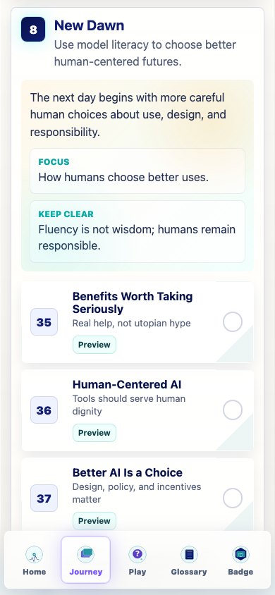
Benefits tier visual | no horizontal overflow detected
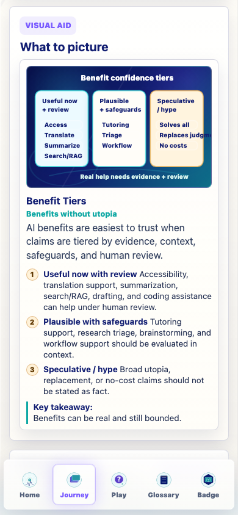
Benefits evidence-tier interaction success state | no horizontal overflow detected
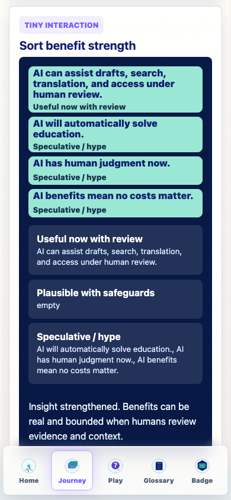
Human-centered accountability visual | no horizontal overflow detected
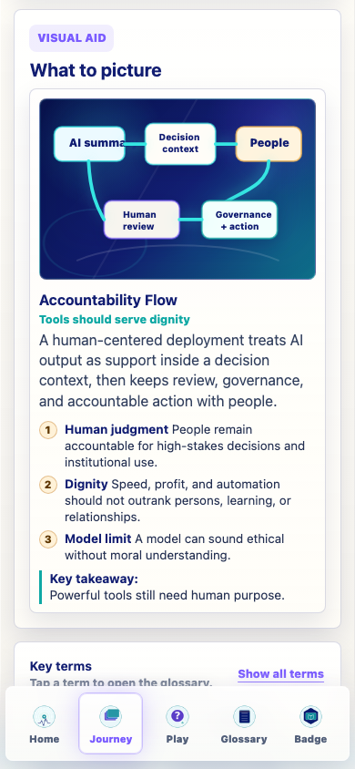
Human-centered scenario correct feedback | no horizontal overflow detected
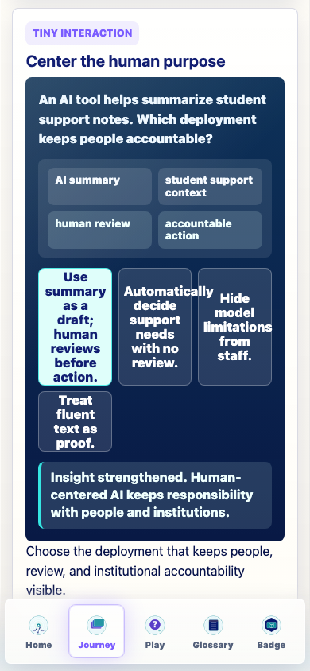
Better-AI control panel visual | no horizontal overflow detected
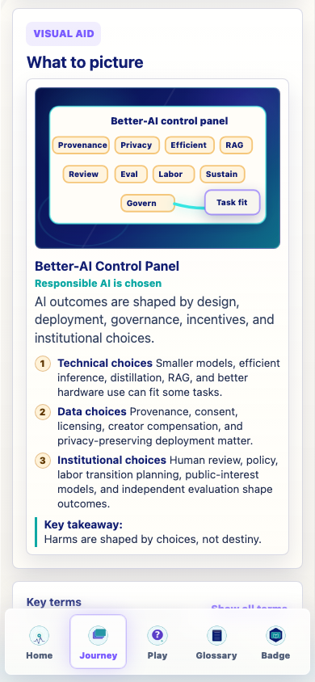
Better-AI levers success state | no horizontal overflow detected
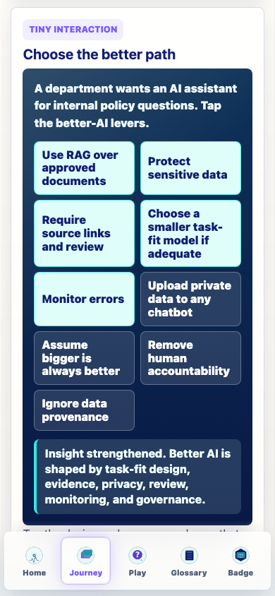
Prompting context tray visual | no horizontal overflow detected
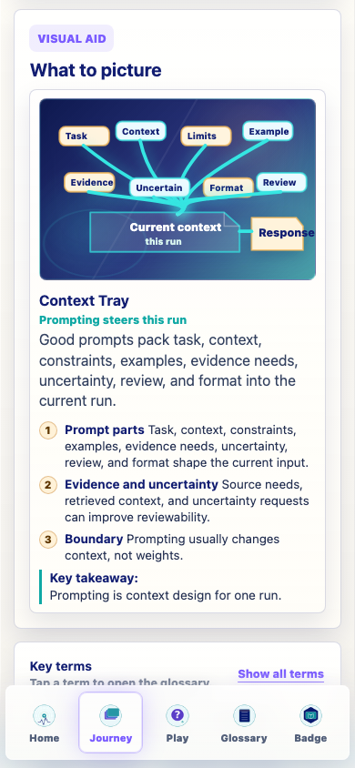
Prompt builder complete state with constraints and examples | no horizontal overflow detected
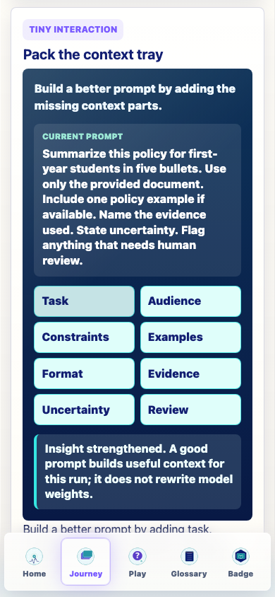
Synthesis full-chain visual | no horizontal overflow detected
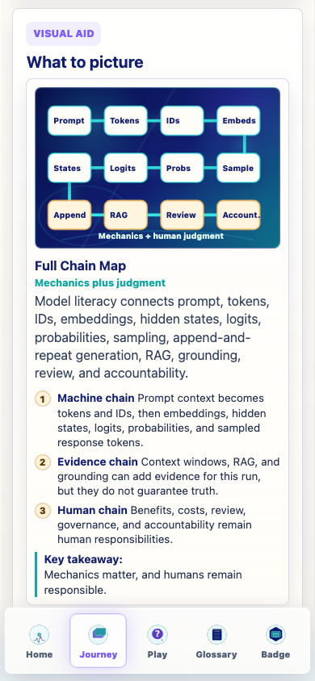
Synthesis chain complete state | no horizontal overflow detected
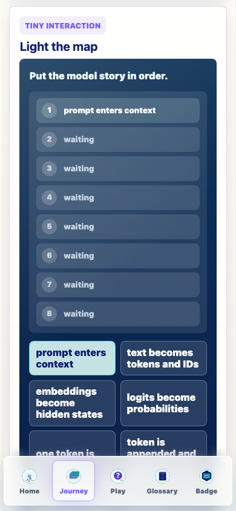
Synthesis full-chain visual at 320px | no horizontal overflow detected
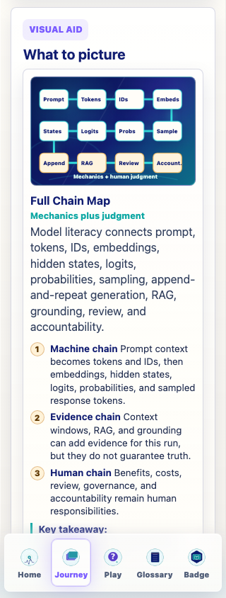
Synthesis chain interaction at 320px | no horizontal overflow detected
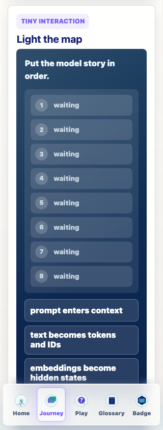
Synthesis key takeaway clearance at 320px | no horizontal overflow detected
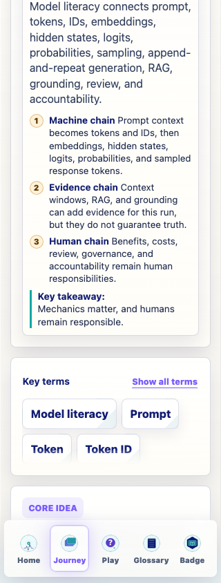
Synthesis final action clear of bottom nav | no horizontal overflow detected
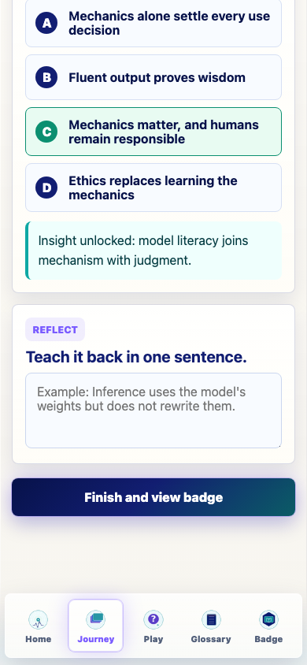
Badge screen still shows one badge model | no horizontal overflow detected
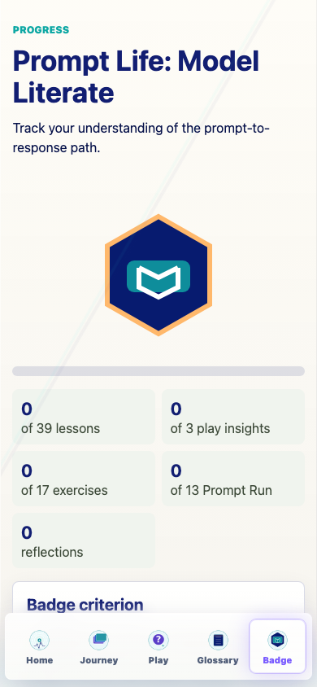